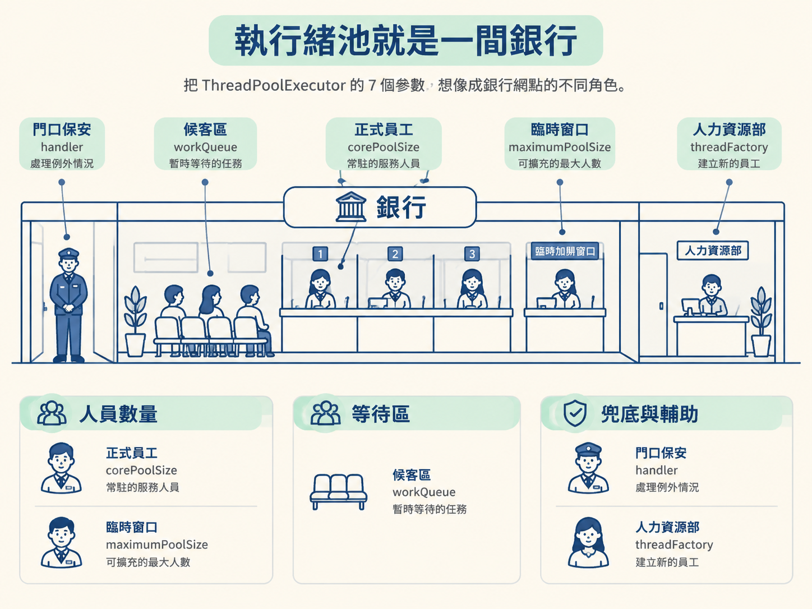
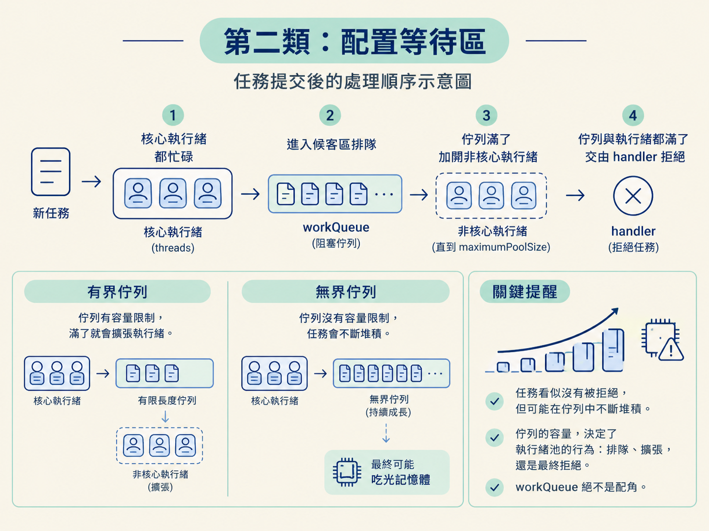
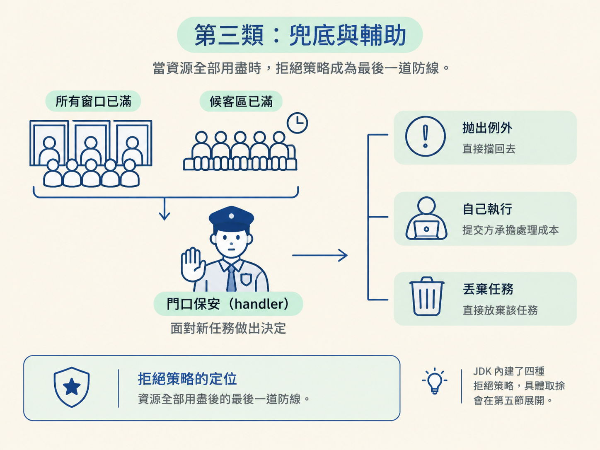

面試問到執行緒池，常見的第一題是：「ThreadPoolExecutor 有哪些核心參數？」你也許能順利背出 corePoolSize、maximumPoolSize、keepAliveTime 和 workQueue。但如果接著被問：「workQueue 和 maximumPoolSize，哪一個會先發揮作用？」很多人就會卡住。
問題通常不在於記不住名稱，而是還沒看懂這些參數如何一起運作。它們不是散落在建構子裡的七個選項，而像是一間銀行裡互相配合的人員、窗口、候客區和保安。
這一節先用銀行網點建立整體畫面，理解每個參數解決什麼問題、如果配置不當又會發生什麼事。下一節再讓任務實際走過執行緒池，看看它提交進來後，究竟會先找誰、再找誰。
想像你走進一間銀行。櫃檯後有幾位正式員工，門口有候客區讓人排隊；客人突然變多時，銀行可以臨時加開窗口。當所有窗口和候客區都滿了，門口還需要有人決定接下來怎麼處理。
這幾個角色，正好對應到 ThreadPoolExecutor 的七個參數。為了比較容易記憶，可以把它們分成三類：人員數量、等待區，以及兜底與輔助。

這一類回答三個問題：平常有幾位固定員工？最多能開幾個窗口？臨時加開的窗口閒置多久後要關閉？
corePoolSize 是核心執行緒數，可以想成銀行的「正式員工」。這些員工平常就坐在櫃檯後待命，即使一段時間沒有客人，也不會因為空閒而被辭退。
放到執行緒池裡，就是池子會維持的核心執行緒數量。這些執行緒建立後會持續等待任務，不必等到任務來了才重新建立執行緒，因此通常能更快接手工作。
maximumPoolSize 是最大執行緒數，代表銀行所有窗口的數量上限。它包含正式員工與臨時加開的窗口。
這裡很容易搞錯：它是執行緒的「總上限」，不是額外還能增加多少條執行緒。例如 corePoolSize 是 2、maximumPoolSize 是 5，意思是最多同時有 5 條執行緒，其中 2 條是核心執行緒，另外 3 條是可以被回收的非核心執行緒，不是 2 加 5 等於 7 條。
keepAliveTime 和它的單位 unit，可以看成臨時員工的保活時間。當目前執行緒數超過核心數，多出來的非核心執行緒如果閒置超過這段時間，仍然沒有接到新任務，就會被回收，等於把臨時加開的窗口關掉。
預設情況下，這個回收規則只套用在非核心執行緒，核心執行緒即使空閒也會保留。如果希望核心執行緒也能在閒置後被回收，必須另外呼叫 allowCoreThreadTimeOut(true)。
workQueue 是工作佇列，可以想成銀行的候客區。當所有正式窗口都在處理客人時，新來的客人不會立刻讓銀行加開臨時窗口，而是先到候客區排隊，等窗口空出來再接受服務。
執行緒池也是如此：當核心執行緒都在忙，新提交的任務會先放進這個阻塞佇列，等待核心執行緒完成手上的工作後再取出處理。常見的實作包括 LinkedBlockingQueue 和 ArrayBlockingQueue。
workQueue 的容量設定，會大幅改變執行緒池的行為。若使用無界佇列，候客區就像永遠坐不滿，任務會持續堆在裡面。因為佇列一直沒有滿，執行緒池也就不會走到「加開非核心執行緒」這一步。
表面上看起來，任務沒有被拒絕似乎很安全；但如果任務持續湧入，佇列可能不斷成長，最後把記憶體吃光。這也是為什麼 workQueue 絕不是配角。它的容量，會決定執行緒池是在排隊、擴張，還是最終拒絕任務。

最後兩個參數不直接決定執行緒數量，但它們會影響可觀測性，以及資源用盡時的處理方式。
threadFactory 是執行緒工廠，可以想成人力資源部。它負責建立執行緒，也可以替每條執行緒設定有意義的名稱，例如加上業務模組名稱。
這個設定在平常可能不顯眼，但出問題時非常有用。當你抓執行緒 dump 或查看日誌，如果每條執行緒都有清楚的名稱，就能快速判斷它屬於哪個執行緒池，排查問題會容易很多。
handler 是拒絕策略，可以想成銀行門口的保安。當所有窗口都滿了，候客區也坐滿了，再有客人進來時，保安必須決定怎麼處理。
這個決定可能是直接擋回去，也就是拋出例外；可能是請提交任務的執行緒自己執行，讓提交方承擔處理成本；也可能是直接丟棄任務。JDK 內建了四種拒絕策略，具體取捨會在第五節展開。現在先記住它的定位：handler 是資源全部用盡後的最後一道防線。

| 參數 | 分類 | 銀行比喻 | 作用 |
|---|---|---|---|
corePoolSize | 人員數量 | 正式員工 | 常駐的核心執行緒數，空閒時也不回收 |
maximumPoolSize | 人員數量 | 所有窗口 | 執行緒總數上限，包含核心與非核心執行緒 |
keepAliveTime＋unit | 人員數量 | 臨時工保活時間 | 非核心執行緒空閒超過此時間就回收 |
workQueue | 等待區 | 候客區 | 核心執行緒都忙碌時，任務排隊使用的阻塞佇列 |
threadFactory | 兜底輔助 | 人力資源部 | 負責建立執行緒，也可以自訂執行緒名稱 |
handler | 兜底輔助 | 保安 | 佇列與執行緒都滿時，決定如何拒絕任務 |
表格中把 keepAliveTime 和 unit 放在同一列，是因為兩者必須一起使用：前者表示時間長度，後者表示這個長度的單位。若以建構子的參數來算，七個參數就是核心執行緒數、最大執行緒數、存活時間、時間單位、工作佇列、執行緒工廠，以及拒絕策略。
實際建立 ThreadPoolExecutor 時，大致會長這樣。程式中的數字只是示例：
ThreadPoolExecutor pool = new ThreadPoolExecutor(
2, // corePoolSize：正式員工 2 位
5, // maximumPoolSize：最多開 5 個窗口
60L, TimeUnit.SECONDS, // keepAliveTime + unit：臨時工閒置 60 秒就收
new ArrayBlockingQueue<>(10), // workQueue：候客區可排 10 個人
new CustomThreadFactory("order"), // threadFactory：幫執行緒取好名字
new ThreadPoolExecutor.AbortPolicy() // handler：滿了就拋出例外
);把每一行翻回銀行的畫面，就是 2 位正式員工、最多 5 個窗口、臨時員工閒置 60 秒後回收、候客區最多排 10 個人，再由人力資源部負責招募，並由保安在資源用盡時拋出例外。
ThreadPoolExecutor的七個參數，可以分成三類。人員數量類包括corePoolSize（常駐的正式員工）、maximumPoolSize（執行緒總數上限，不是額外名額），以及keepAliveTime與unit（非核心執行緒的保活時間）。等待區類是workQueue，負責在核心執行緒都忙碌時暫存任務。兜底與輔助類則包括threadFactory（建立執行緒並可自訂名稱）和handler（資源全部用盡時的拒絕策略）。
現在先把它們記成一間銀行：正式員工是核心執行緒，所有窗口是最大執行緒數，臨時工的保活時間對應非核心執行緒的回收條件，候客區是工作佇列，人力資源部是執行緒工廠，保安則是拒絕策略。
這些參數不是靜態擺在建構子裡的設定。任務提交進來後，會依照固定的運作邏輯依次碰到它們。下一節就讓任務實際走過這間銀行，看看執行緒池到底先使用核心執行緒、工作佇列，還是最大執行緒數。